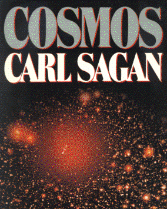

Cosmosby Carl Sagan
publisher: Ballantine Books
Non-fiction, 345 pages | 
(book cover art, Copyright ©1980 Carl Sagan)
Used with Permission. |
Return to the Book MenuPrevious|Next
Description:
A tour of the universe, from theories of the origins of the
universe, to theories about the origin of life on earth, to the planets
and beyond, with lots of great pictures. This is the book that made Mr.
Howe decide to be a scientist when he was younger. It was the companion
book to a 13-part series of TV shows on science.
Recommended for: Good for all audiences, including people
new to astronomy, history buffs, and people who want to read an inspiring
book on science.
Did-you-read questions:
Deadline: February 1, 2005.
These should be easy questions, but you should have the questions ready and keep an eye out during your reading. Each question should be answered with 1-2 sentences.
Note: these questions are not probably not the most important part of the book! Your essay will not have to cover these questions!
- Who or what are the hunters and the floaters?
- Why did we dig short trenches on Mars? (Are these the same as the
canals?)
- What were the people on the Voyager Navigation Team trying to do when they
made a surprise discovery about Io?
- What is the Drake equation?
- According to the Encyclopaedia Galactica, what is "Humanity's" probability
of survival?
Report Questions:Deadline: Peer Review Session on February 8, 2005; paper due February 10, 2005.
You should write a 3 - 4 page essay on one of the following questions. Your essay should include examples and references to the book, unless otherwise specified. Page number references are sufficient for citing material from the primary book. If you use outside materials, cite your sources in full. If you would rather write on a different topic, you may, but clear it with Mr. Howe or Ms. Sullivan first.
- The author uses a lot of historical references as well as modern observations
about the cosmos. (It is not unusual to see a picture of a probable black
hole facing a picture of Egyptian ruins on the next page.) How did this
contribute (or detract) from the book as a whole?
- This book was published about 20 years ago. A lot of science has happened
in those 20 years. Does the book feel dated? What did you notice has changed
or been updated since this book was written?
- If you get a chance to find the TV series that went with this book, (sometimes
available in the "documentary" section of movie rental spots), how does
it compare with the book? (You don't have to rent the entire series; one
or two episodes should do nicely to give you a feel for the two.)
- In addition to being an astronomer and space scientist, Carl Sagan went
on to actively fight bad science and mysticism. Do you see signs of the
author trying to debunk popular myths in this book?
Graphic and Presentation:
Deadline: February 21 - March 3, 2005.You will give a 10 minute presentation on both of the following:
- Convince your peers that they should (or should not) read this book. (This may include a brief summary of the book.) Give examples of what was cool or worthwhile in the book, and what you got out of it (or didn't).
- Describe a (realistic) science idea that you learned about in this book, citing information from at least 2 external sources (other than the dictionary). If you would like help choosing or understanding an idea from your book, you are invited to come talk to Mr. Howe or Ms. Sullivan.
Note: This presentation should not be just a reading of your paper!Along with this presentation, you should have a graphic that will go with it. A Power Point presentation is recommended, but if you have a special idea for a something else, such as a model, an original video presentation, or a well done drawing/ painting/ sculpture/ etc., you may do so, provided it involves a similar level of effort and polish. Speak to Mr. Howe or Ms. Sullivan first if you are considering an alternate graphic format to the Power Point.
Return to the Book MenuPrevious|Next